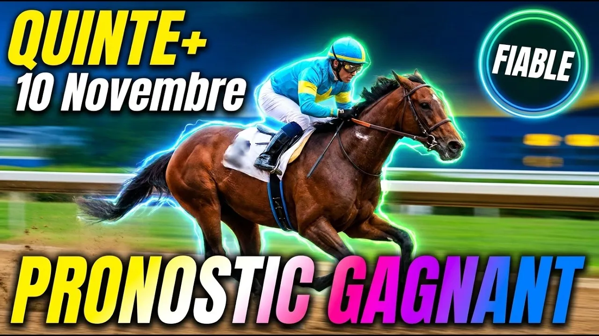

Direction l'hippodrome de Fontainebleau pour le Prix Roland Fougedoire, un handicap divisé de Classe 2 réservé aux sprinteurs de trois ans et plus sur la courte distance de 1 200 mètres en ligne droite. Seize concurrents de vitesse s'affrontent sur le gazon très souple, avec une allocation globale de 50 900 euros.
J'aime ces courses plus que tout. Pas de virage pour respirer, pas de répit, pas de seconde chance. Douze cents mètres en ligne droite, c'est un battement de cœur, une explosion. On aime ou on déteste, mais on ne reste jamais indifférent.
Le parcours est réputé pour sa sélectivité. Sans aucun virage pour temporiser les ardeurs, le rythme est soutenu dès l'ouverture des stalles. La gestion des numéros de corde devient alors un facteur capital : selon l'état du terrain et le wagon qui se formera en piste, évoluer du côté des cordes extérieures ou intérieures peut tout changer.
Et la piste en gazon annoncée très souple avantagera les spécialistes des terrains profonds. Sur un tel sprint, la moindre hésitation au départ ou un mauvais choix de trajectoire se paye immédiatement. C'est cruel, c'est magnifique, et c'est exactement pour cela qu'on aime ce sport.
Hongre de sept ans présenté par Madame Sofie Lanslots et monté par Pierre-Charles Boudot, il porte la lourde charge de 61,5 kilos. Il a fait l'arrivée de trois de ses cinq derniers événements, ce qui force le respect. Mais il doit s'élancer de la stalle 16, tout à l'extérieur. Malgré son expérience à valeur 44, ce numéro de corde désavantageux rend sa tâche délicate pour la victoire. On l'aime pour son courage, on le craint pour sa charge.
Hongre de quatre ans entraîné par Madame Alicja Karkosa et guidé par Marvin Grandin, il part de la stalle 15 sous 60,5 kilos. Vainqueur en dernier lieu sur la ligne droite de Chantilly, il a subi une pénalité de trois kilos sur l'échelle des valeurs. Malgré le bon taux de réussite de son entourage dans les Quinté, sa charge révisée à la hausse et son numéro extérieur incitent à la prudence. Quel dommage, car quelle belle impression il avait laissée.
Hongre de cinq ans sous la coupe de Gérald Mossé et piloté par Eddy Hardouin, il s'élance de la stalle 8 avec 58 kilos. Gagnant de Quinté cet été à Deauville, il a prouvé qu'il restait compétitif malgré sa hausse de poids, comme le témoigne sa récente troisième place. À valeur stable de 41,5 et avec un entraîneur affichant 43 % de réussite dans les événements, il détient une très belle chance pour les places. Un cheval qui ne triche jamais, et ça me touche.
Hongre de quatre ans préparé par Yann Barberot et associé à Hugo Journiac, il a hérité de la stalle 2 sous la charge de 57,5 kilos. Lauréat d'un Quinté à Dieppe en juin, il a vu sa valeur baisser d'un kilo par le handicapeur. Il retrouve un tracé qu'il apprécie et bénéficie du duo jockey-entraîneur à plus de 50 % de réussite. Il est tout à fait capable de se racheter. Ne l'oubliez pas dans vos combinaisons élargies.
Pouliche de trois ans entraînée par Mauricio Delcher Sanchez et confiée à Christophe Soumillon, elle part de la stalle 6 avec 57,5 kilos. Elle reste sur deux victoires consécutives à Fontainebleau puis à Chantilly, et aborde son premier handicap avec trois kilos de pénalité. Mais son duo avec Christophe Soumillon affiche plus de 48 % de réussite dans les Quinté, et la pouliche compte 57 % de réussite avec son jockey. C'est l'une des grandes favorites, et franchement, c'est celle qui me donne le plus d'émotion.
Jument de six ans entraînée par Franck Foresi et montée par Ronan Thomas, elle s'élance de la stalle 10 sous 57 kilos. Victorieuse de deux récents handicaps consécutifs à Marseille puis à Lyon, elle a été pénalisée de trois kilos. Son entente avec son jockey est remarquable, avec 60 % de réussite dans les cinq premiers. Malgré sa charge relevée, sa forme étincelante lui permet d'ambitionner une place. Une jument généreuse comme on les aime.
Hongre de quatre ans entraîné par Madame Stéphanie Penot et piloté par Thomas Trullier, il part de la stalle 12 avec 56,5 kilos. Gagnant de Quinté à Deauville en août, il vient de se classer troisième à Chantilly en faisant preuve d'une belle constance. Son entraîneur brille avec 20 % de victoires en Quinté et son jockey affiche 48 % de réussite. Confirmé à ce niveau et restant à valeur stable, c'est une base très solide. Voilà un cheval qui ne déçoit jamais.
Pouliche de trois ans sous la responsabilité de Jérôme Reynier et montée par Antonio Orani, elle part de la stalle 5 avec 56,5 kilos. Impressionnante gagnante à Marseille-Borély, elle a bénéficié d'un allègement d'un demi-kilo par le handicapeur. Avec 51 % de réussite pour son duo jockey-entraîneur dans les événements et une forme resplendissante, elle vise le podium. J'y crois sincèrement.
Mâle de quatre ans préparé par Florent Monnier et confié à Augustin Madamet, il partira de la stalle 11 sous 55,5 kilos. Modèle de régularité dans les handicaps, il reste sur deux podiums consécutifs sur la ligne droite de Chantilly. Bien qu'il découvre Fontainebleau, sa constance exemplaire et sa valeur stable font de lui un pilier incontournable. C'est le genre de cheval sur lequel on construit un ticket tranquillement, avec confiance.
Mâle de quatre ans entraîné par Jérôme Reynier et piloté par Aurélien Lemaitre, il s'élance de la stalle 3 avec 55,5 kilos. Après trois mois d'absence, il vient de s'imposer à Strasbourg avant de terminer deuxième à ParisLongchamp. Il raccourcit sur 1 200 mètres pour la première fois de sa carrière, mais ce concurrent de classe conserve de très hauts arguments. Un vrai pari de passion, et je le prends.
Jument de six ans préparée par Madame Corine Barande Barbe et montée par Frida Valle Skar, elle s'élance de la stalle 1 avec 55 kilos. Victorieuse de Quinté au printemps, elle voit sa valeur baisser d'un demi-kilo pour retrouver son poids de forme initial. Avec un entourage habitué à briller à ce niveau, cet allègement en fait une opportunité statistique très attrayante à belle cote. La corde 1 ne gâche rien.
Mâle de trois ans entraîné par Madame Valérie Dissaux et associé à Maxime Guyon, il part de la stalle 9 sous 54,5 kilos. À valeur stable, il vient de terminer sixième d'un handicap tout près des premiers. Son jockey présente le meilleur taux de réussite au départ avec près de 15 % de victoires en Quinté. C'est un tocard très séduisant. Avec Guyon, tout est possible, et c'est bien ce qui me plaît.
Pouliche de trois ans entraînée par Mauricio Delcher Sanchez et montée par Antoine Hamelin, elle s'élance de la stalle 4 avec 53,5 kilos. Elle bénéficie du plus grand allègement du lot avec un kilo et demi en moins accordé par le handicapeur. Ayant manqué de peu la victoire sur ce tracé exact de Fontainebleau, sa situation au poids et son bon numéro de corde en font un coup de poker idéal. Un coup de cœur, clairement.
Hongre de quatre ans entraîné par Jean-Pierre Carvalho et piloté par Anthony Crastus, il s'élance de la stalle 7 sous 53,5 kilos. Tenant du titre de ce Prix Roland Fougedoire qu'il a remporté l'an passé sur ce parcours, il vient d'imposer son punch à Chantilly. Malgré deux kilos et demi de pénalité, son aptitude totale à la ligne droite de Fontainebleau en fait un prétendant très sérieux aux premières places. Quand un cheval aime un endroit à ce point, il faut l'écouter.
Hongre de cinq ans sous la coupe de Madame Adélaïde Budka et piloté par Pierre Remoué, il part de la stalle 13 sous 53 kilos. Discret lors de ses deux courses de rentrée après trois mois d'absence, il manque encore de rythme et il est préférable de le revoir. On l'écarte à regrets.
Pouliche de trois ans présentée par Flavie Bresson et montée par Jérôme Claudic, elle s'élance de la stalle 14 sous 53 kilos. Deuxième d'un Quinté cet été à Deauville, elle n'a pu s'exprimer en dernier lieu à Chantilly où elle a été malheureuse. À valeur stable, elle retrouve son jockey habituel et peut remettre les pendules à l'heure à belle cote. J'aime cette idée de revanche.
Sur ce sprint indécis, laissons parler la passion sans oublier la raison. Marbellesa, en pleine confiance et associée à Soumillon, est notre base, notre grande favorite, celle qui fait battre le cœur plus vite. Schuman apporte sa régularité rassurante, Alparslan son amour de Fontainebleau, Khalinskha sa pointe de vitesse naissante et Prince Aubois sa constance. Pour pimenter les rapports à belle cote, Laith, Mataki avec Maxime Guyon et Fata Morgana en quête de revanche sont nos coups de cœur.
Base : 5 Marbellesa
Top 5 : 5 - 9 - 14 - 8 - 7
Couplé Placé :
5 Marbellesa et 9 Schuman avec 14 Alparslan, 8 Khalinskha et 7 Prince Aubois
Deux sur Quatre :
5 - 9 avec 14 - 8 - 7 - 10
Multi en 5 :
5 - 9 - 14 - 8 - 7
Quinté+ Ordre :
5 - 9 en piliers avec 14 - 8 - 7 - 10 - 12 - 16 en associés
Retrouvez l'analyse vidéo complète sur notre chaîne YouTube Bravo Turf. Abonnez-vous, activez la cloche des notifications et laissez un pouce bleu si ce décryptage vous aide.
Jouez avec modération
La passion des courses est belle quand elle reste un plaisir. Ne misez jamais plus que ce que vous pouvez vous permettre de perdre. Fixez-vous un budget hebdomadaire et tenez-vous-y. En cas de difficulté, consultez Joueurs Info Service au 09 74 75 13 13.